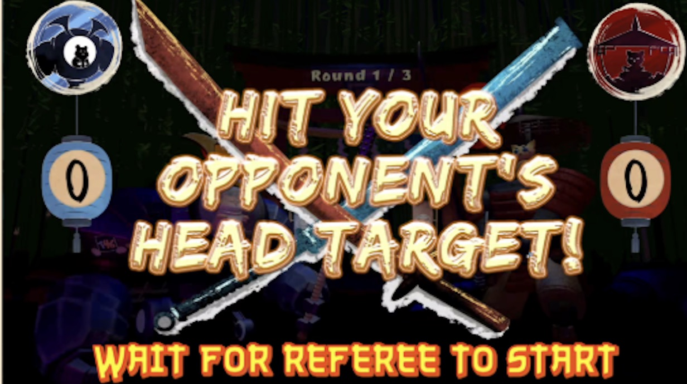
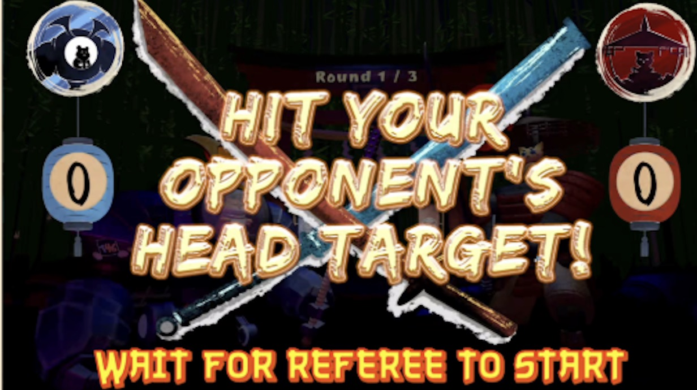

Catana Vengeance
A real-time samurai combat experience developed for the ETC Building Virtual Worlds Festival.
Overview
 

This project is a location-based interactive game created for the CMU Entertainment Technology Center’s Building Virtual Worlds (BVW) Festival. Players suit up as armored samurai and physically spar, while their digital avatars respond to every movement and hit in real time. The game brings together live action and digital feedback, turning each match into something that is fun to play and enjoyable to watch. The project was showcased at the 2025 BVW Festival and won the First Penguin Award.
My Role
Programmer
- Implemented player input and button interaction logic in Unity
- Connected physical button inputs to in-game responses for real-time gameplay
- Collaborated with the team to test and refine input behavior during development
Physical Design & Fabrication
- Participated in the design and making of the physical armor
- Assisted with prototyping, assembly, and iterative adjustments
- Contributed to playtesting and on-site setup during the festival
Reflection
This project won the First Penguin Award, highlighting the importance of taking risks during the idea development process. Many elements, especially the physical armor, began with uncertainty, and we learned that building and testing were often the only ways to move forward.
While our earlier BVW projects emphasized playtesting for gameplay, this experience expanded that understanding to include safety, durability, and real-world constraints—reminding us that playtesting in physical experiences goes beyond fun and interaction.
Related Links
Watch the BVW Festival livestream where this project was showcased!!